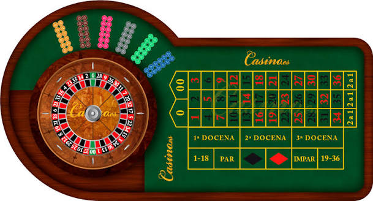
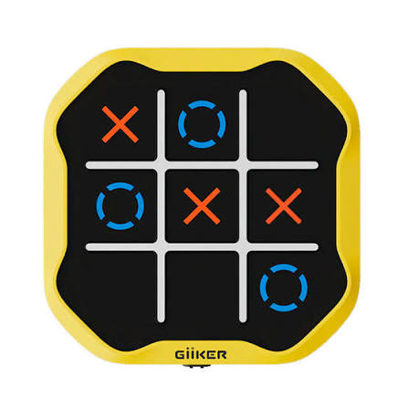

Projectes
Ruleta

Recrear la taula típica de casinos amb interfície gràfica i fer funcional poder jugar una partida (Python).
- Fer el tauler per a que es mostri amb interfície gràfica
- Que interactiu a l'hora d'utilitzar el ratolí en el tauler
- Fer els algoritmes per que es resolgui correctament una partida
- Finalment, fer l'animació per a que giri la ruleta
3 en Ratlla

3 en ratlla simple on l'ia selecciona una posició a l'atzar per posar el cercle (no te reconeixement de patrons)
- Disenyar el tauler
- Fer els algoritmes per a que pugis jugar al joc de manera correcte
- Millorar la IA per a que sigui més difícil guanyar